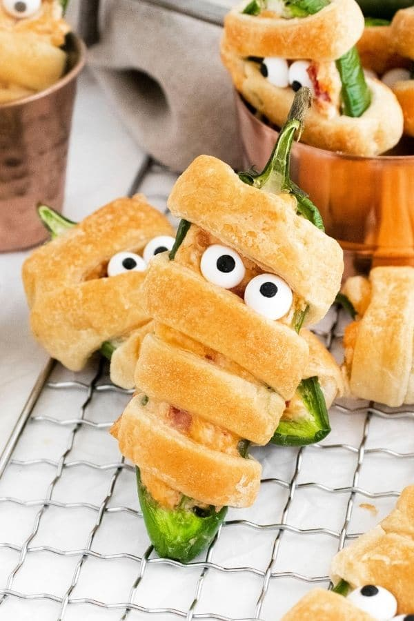
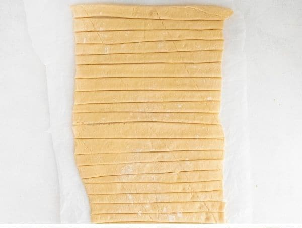

Mummy Jalapeño Poppers Recipes

Description
These adorable little mummies are a perfect addition to your party buffet. Jalapeños filled with cream cheese, bacon, and cheddar? Sign me up!
Oh, they are wrapped in crescent rolls as well? Give them to me NOW!
Ingredients
- Fresh Jalapeños - Slice in half and scrape out the seeds and membrane.
- Cream Cheese - Use softened cream cheese.
- Shredded Cheddar Cheese - Shred yourself to avoid the anti-caking agent present on pre-shredded cheese.
- Bacon - Cook to desired crispiness and cut or crumble to small bits.
- Paprika and Garlic Powder - For a little color and flavor.
- 1 Can of Premade Cresent Rolls - Open and cut dough into thin strips like below:
